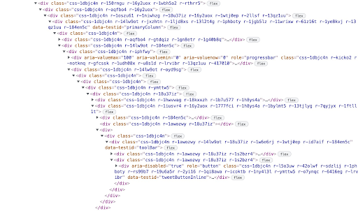
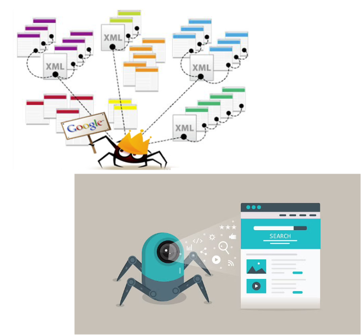
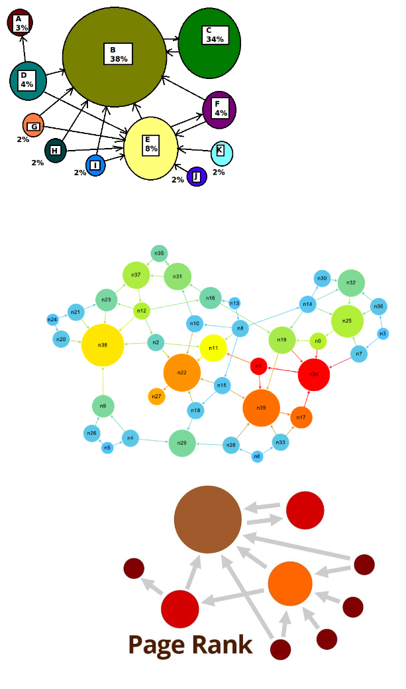

Temas
- Estructura
- Formulario
- Accesibilidad
- SEO
- Estilo
-patrón de comportamiento visual
-Llamadas de acción
-Descripción de las habitaciones y del hotel
La accesibilidad web es la práctica inclusiva de garantizar y facilitar el uso de páginas web a todo tipo de personas, independientemente de sus conocimientos o capacidades, ya sean físicas o intelectuales.
La accesibilidad web atañe, en lo referido a personas con discapacidad visual, a no usar recursos visuales que puedan confundir al navegante -p.e., usar un color de letra que se confunda con el fondo-, y a diseñar un código HTML de forma optimizada y funcional que permita el correcto funcionamiento del lector de pantalla.
Los dos marcos básicos a partir de los cuales se puede crear todo son “div” y “span”, pero estos no aportan información como tal. Un lector de pantallas es capaz de interpretar mejor los marcos HTML que sean bien utilizados. Para ello, hay que evitar:
Abuso de "divs"
Se usan marcos de navegación como "nav", "header" y "main"
Uso de ARIA
Asociación label - input
Uso de atributos "alt" para que el lector describa lo que vea en la página.
¿Por qué importa?

SEO on page
SEO off page
* {
transition: background-color 200ms ease,
opacity 200ms ease,
color 100ms ease;
}